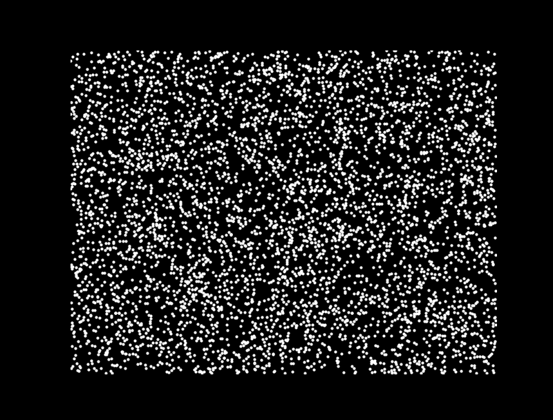
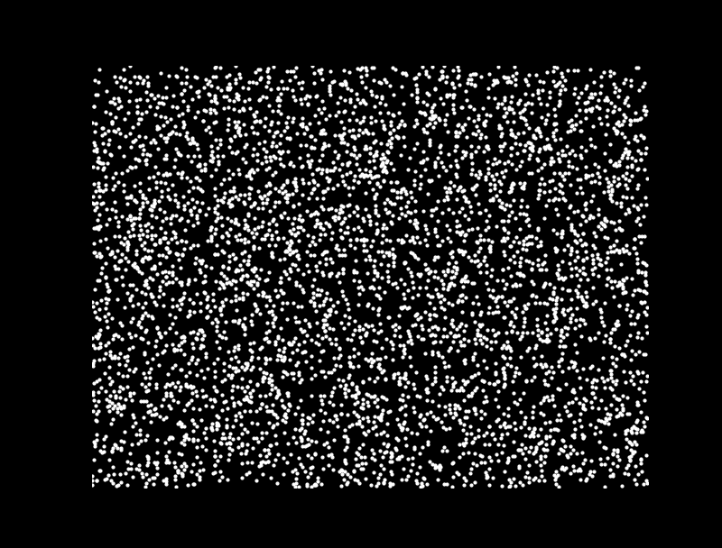
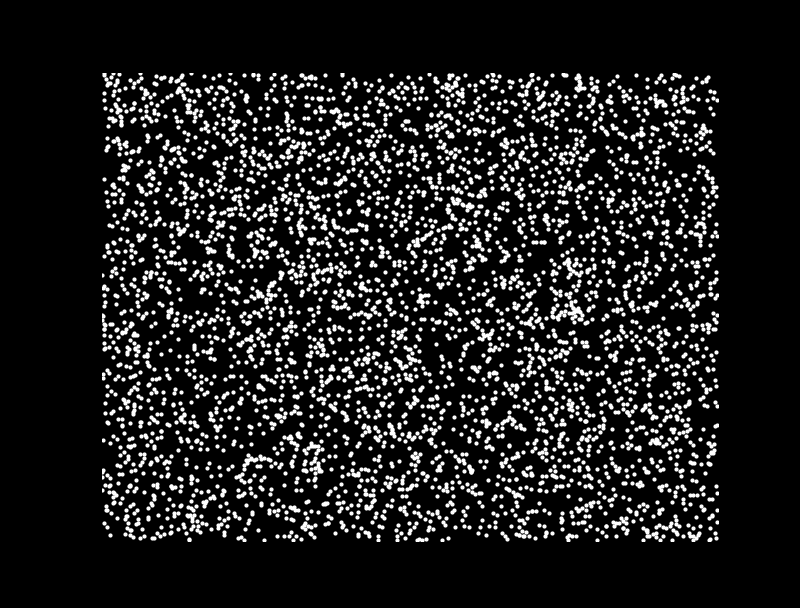

Abstract
Human visual perception offers valuable insights for understanding computational principles of motion-based scene interpretation. Humans robustly detect and segment moving entities that constitute independently moveable chunks of matter, whether observing sparse moving dots, textured surfaces, or naturalistic scenes. In contrast, existing computer vision systems lack a unified approach that works across these diverse settings. Inspired by principles of human perception, we propose a generative model that hierarchically groups low-level motion cues and high-level appearance features into particles (small Gaussians representing local matter), and groups particles into clusters capturing coherently and independently moveable physical entities.
We develop a hardware-accelerated inference algorithm based on parallelized block Gibbs sampling to recover stable particle motion and groupings. Our model operates on different kinds of inputs (random dots, stylized textures, or naturalistic RGB video), enabling it to work across settings where biological vision succeeds but existing computer vision approaches do not. We validate this unified framework across three domains: on 2D random dot kinematograms, our approach captures human object perception including graded uncertainty across ambiguous conditions; on a Gestalt-inspired dataset of camouflaged rotating objects, our approach recovers correct 3D structure from motion and thereby accurate 2D object segmentation; and on naturalistic RGB videos, our model tracks the moving 3D matter that makes up deforming objects, enabling robust object-level scene understanding. This work thus establishes a general framework for motion-based perception grounded in principles of human vision.
Motion-Based Perception Across Domains
Human vision robustly segments the world into independently moveable chunks of matter across very different visual conditions: sparse moving dots with no appearance cues, camouflaged surfaces where texture is uninformative, and naturalistic scenes containing deforming objects. Existing vision systems are typically specialized for one of these regimes, while GenMatter uses a single probabilistic model and inference procedure across all three.
The paper evaluates this claim in three settings. In random dot kinematograms, the model must explain object membership from motion alone and capture graded human uncertainty across ambiguous dot correspondences. In Gestalt-inspired camouflaged structure-from-motion videos, foreground and background share the same texture, so segmentation depends on recovering 3D structure from motion. In naturalistic RGB video, monocular depth, optical flow, and DINO features are lifted into a 3D representation that can track the moving matter making up deforming objects.
These experiments test two complementary objectives: whether the same generative matter model can support motion-based perception across settings where human vision succeeds, and whether its inferred particles and clusters provide useful object-level structure for segmentation and tracking.
Generative Matter Model and Inference

Generative matter model
GenMatter is a two-level hierarchical generative model for structured motion. At the lower level, data points are grouped into particles, where each particle is a local Gaussian representing a small piece of moving matter. At the higher level, particles are grouped into clusters, which represent coherent, independently moveable physical entities.
Particles, clusters, and motion
Each cluster is parameterized by a Gaussian over space and a rigid-body transformation. Particles inherit this cluster-level motion while retaining their own spatial extent and velocity covariance, giving the model enough flexibility to explain both rigid and deformable objects. This hierarchy lets local matter move with a coherent entity while allowing within-cluster slack for non-rigid motion.
Inference
Inference uses parallelized blocked Gibbs sampling to update data-point assignments, particle parameters, cluster assignments, and cluster transformations. Conditional independence in the hierarchy allows many variables at the data-point, particle, and cluster levels to be sampled in parallel, and the same inference procedure is used across random dots, camouflaged structure-from-motion stimuli, and RGB videos with optional image features.
Random Dot Kinematograms
We created 27 RDK stimuli from 9 rigid-body scenes and collected binary same-object judgments from 150 participants. GenMatter was run on 50 random seeds per stimulus to match the human sample size.



Each panel pairs an original random-dot kinematogram with GenMatter's inferred posterior over object structure. The stimuli contain sparse moving dots with no appearance or boundary cues, so the task is to explain whether probe dots belong to the same moving object from motion alone. In the posterior videos, dots are colored by inferred cluster assignment, showing how the model groups ambiguous dot correspondences into coherent moving matter.
Structure from Motion in Gestalt Stimuli
We evaluate GenMatter on 140 short videos of rotating 3D objects with foreground and background textures matched. Static frames provide little segmentation information, but motion supports 3D structure from motion.

Table 1. Summary statistics across 140 Gestalt videos. Values are mean [95% bootstrap CI].
| Method | Accuracy | Jaccard |
|---|---|---|
| SegAnyMo | 0.33 [0.28, 0.37] | 0.26 [0.22, 0.31] |
| FlowSAM | 0.87 [0.85, 0.88] | 0.67 [0.63, 0.70] |
| GenMatter | 0.94 [0.93, 0.94] | 0.72 [0.70, 0.74] |
Posterior segmentations show the inferred object mask over time. Because foreground and background share the same texture, the recovered object boundary comes from motion-based 3D structure rather than static appearance contrast.
The same inference procedure is applied across matched texture patterns, extracting a MAP segmentation from samples over the latent matter representation.
GenMatter assigns probability mass to contiguous matter regions even when texture is deliberately uninformative, using motion to recover the rotating object.
The benchmark contains 140 videos: 20 object geometries rendered with 7 foreground-background matched texture patterns.
Static frames provide little segmentation information, but the model's inferred moving particles and clusters make the object boundary explicit over time.
GenMatter scores higher than FlowSAM and SegAnyMo on both per-pixel accuracy and Jaccard, with more consistent performance across stimuli.
Across textures, segmentation emerges from the posterior over moving matter rather than from a feed-forward appearance mask.
3D Particle Representations from RGB Video
On TAP-Vid-DAVIS videos, GenMatter conditions on monocular depth, optical flow, and DINO features. Its projected 3D particle representation matches CoTracker3 on matter-weighted Jaccard without task-specific pretraining.

Tracking performance on TAP-Vid DAVIS. Values are mean [95% bootstrap CI].
| Metric | CoTracker3 | GenMatter | GenMatter (abl.) |
|---|---|---|---|
| Jm (SAM) | 0.78 [0.69, 0.87] | 0.79 [0.73, 0.84] | 0.69 [0.61, 0.77] |
| Jm (GT) | 0.78 [0.69, 0.87] | 0.77 [0.73, 0.84] | 0.68 [0.58, 0.73] |
BibTeX
@inproceedings{li2026genmatter,
title = {GenMatter: Perceiving Physical Objects with Generative Matter Models},
author = {Li, Eric and Dasgupta, Arijit and Friedman, Yoni and Huot, Mathieu and Mansinghka, Vikash and O'Connell, Thomas and Freeman, William T. and Tenenbaum, Joshua B.},
booktitle = {Proceedings of the IEEE/CVF Conference on Computer Vision and Pattern Recognition (CVPR)},
year = {2026}
}Acknowledgements
This work was supported in part by the Department of the Air Force Artificial Intelligence Accelerator (Cooperative Agreement FA8750-19-2-1000), NSF Award 2019786 (The NSF AI Institute for Artificial Intelligence and Fundamental Interactions), Navy-ONR MURI N00002610, Navy-ONR MURI N00014-22-1-2740, CoCoSys from the Georgia Institute of Technology (Award 2023-JU-3131), the MIT Siegel Family Quest for Intelligence, and the Probabilistic Computing Foundation.